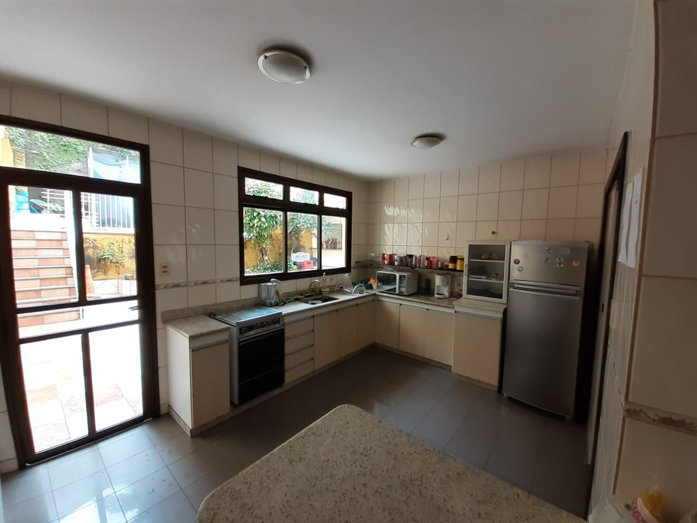
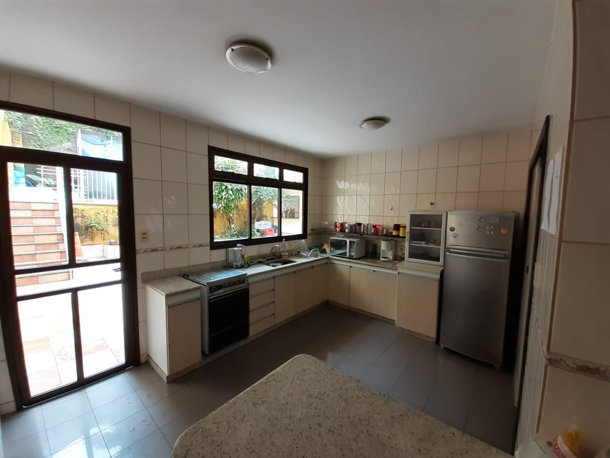
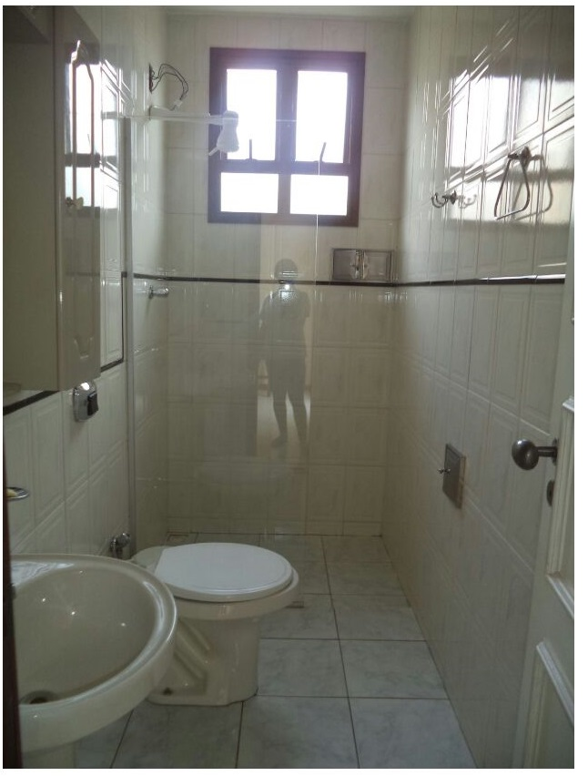
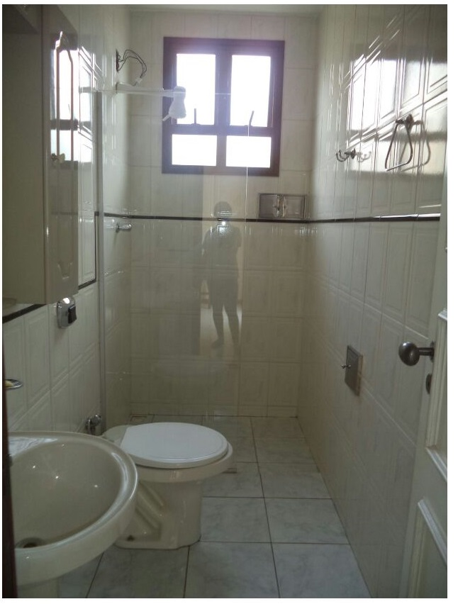
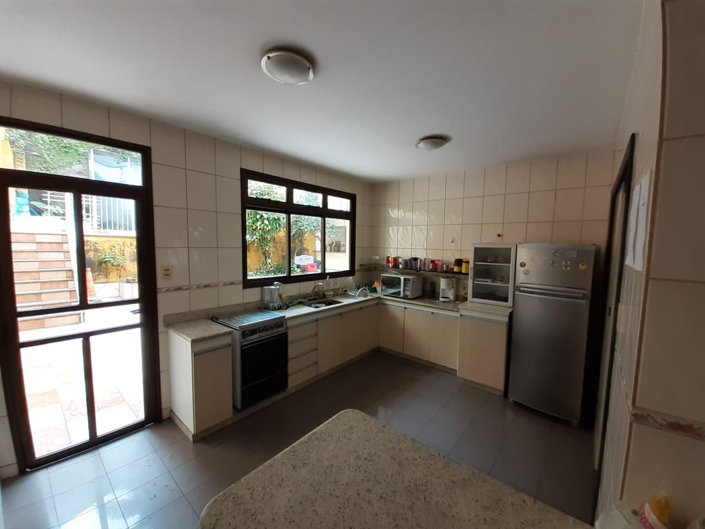
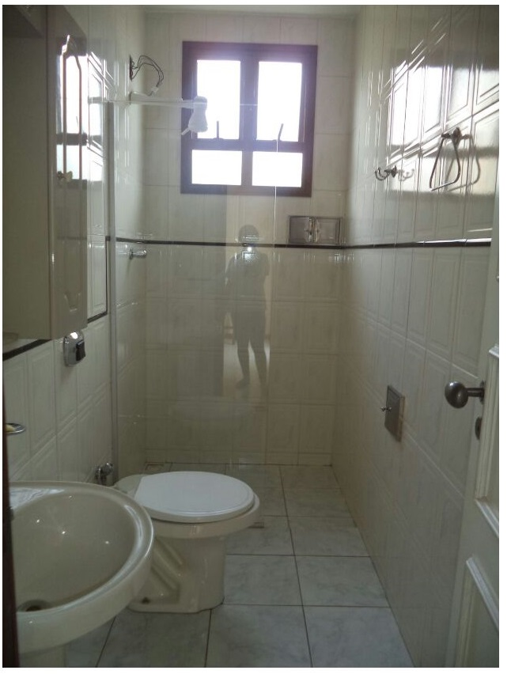

 

A nossa casa está localizada em um dos bairros nobres de Itabira, com rede de vigilância e câmeras espalhadas pelo bairro. Além de estar perto de mercados, padarias, academias, pontos de ônibus, SAMU, bombeiros, posto de saúde, postos de gasolina, bares, restaurantes, lanchonetes, lotéricas e hortifrutis.
A Viracopos possui 3 andares com


Aqui na Viracopos, todos os quartos vêm equipados com o básico: cama com colchão, armários espaçosos para suas roupas, mesa e cadeira. A melhor parte é que você não precisa se preocupar em comprar móveis novos, pois temos tudo o que você precisa para começar.
EÉ importante mencionar que nossos móveis são usados, incluindo o colchão, mas estão em ótimo estado e prontos para uso. No entanto, a decisão de comprar um colchão novo é totalmente sua. Não é necessário fazê-lo no primeiro ano, mas muitos de nossos residentes acham que é uma ótima maneira de tornar seu espaço ainda mais confortável enquanto passam pelos anos de graduação.
Quanto a roupas de cama e travesseiros, esses são itens pessoais que cada morador deve trazer consigo. Afinal, o conforto do seu sono é algo muito particular, e queremos que você se sinta à vontade para personalizar seu espaço da maneira que preferir.


Aqui em casa é feito a compra comum da casa e é tudo incluído nas contas. É comprado todo o básico de alimentação (arroz, feijão, temperos) material de limpeza, higiene (papel higiênico) ração para os cachorros e materiais para manutenção da casa. Tudo isso é dividido igualmente no final de cada mês nas contas. Na compra da casa não está incluído a mistura de cada um, pois nem todos comem fígado por exemplo, então você compra sua carne, laticínios, pães, frutas e biscoitos de forma individual. Na geladeira, cada um tem seu espaço de armazenamento e é recomendado guardar coisas como biscoitos e miojos no quarto para evitar a confusão e pegar por engano, mas caso aconteça, pode avisar que quem pegou sempre repõe. Sem brigas!
A Semana Federal é uma tradição vibrante aqui em Itabira, especialmente destinada a dar as boas-vindas aos calouros. Durante duas semanas repletas de festas e eventos, os novos estudantes têm a oportunidade única de se conectar com os rostos que vão acompanhá-los ao longo de toda a sua jornada acadêmica em nossa cidade.
Essa celebração não é apenas sobre diversão; é sobre forjar laços que podem durar uma vida inteira. As amizades que você faz durante a Semana Federal são mais do que apenas colegas de faculdade; são companheiros que estarão lá para ajudá-lo durante os cursos, trocar informações sobre matérias e oferecer apoio em todos os desafios acadêmicos que surgirem.
Essas conexões especiais não se limitam ao período universitário; elas continuam a crescer e evoluir ao longo de toda a sua vida. Portanto, a Semana Federal é apenas o começo de uma jornada emocionante e enriquecedora que você está prestes a embarcar em Itabira.
A cada ano, assumimos a responsabilidade de inaugurar a Semana Federal, marcando o início de um período repleto de festividades emocionantes. Além disso, em alguns anos, quando nossas finanças permitem, celebramos o tradicional Baile Viratron, que é sempre aguardado com grande expectativa.
O que torna nossas festas verdadeiramente especiais é o espírito de equipe que cultivamos. Em todas as nossas celebrações, cada membro da República Viracopos contribui igualmente, desde o início até o fim do evento. Consideramos isso uma parte essencial da nossa tradição, e todos estão cientes de que é fundamental cuidar da casa e ajudar a manter o ambiente em perfeitas condições.
Nossa abordagem é tão comprometida com a colaboração que, em alguns casos, pode haver "trote" para aqueles que não colaborarem plenamente. Essa é uma maneira de garantir que todos estejam envolvidos e comprometidos em garantir o sucesso de nossas festas e a manutenção da harmonia em nossa casa. É um reflexo do nosso compromisso com a comunidade e a responsabilidade compartilhada.
Nossos eventos desempenham um papel importante na geração de recursos para nossa República. Todo o lucro obtido é reinvestido em melhorias e benefícios para a casa, garantindo que todos os moradores desfrutem de um ambiente agradável e confortável. Isso inclui a aquisição de novos equipamentos, como TVs, investimentos em reformas para manter nosso espaço atraente e acolhedor, bem como a realização de manutenção regular, como pintura e até mesmo cuidados veterinários para nossos queridos mascotes. Em resumo, o dinheiro gerado a partir dessas iniciativas é sempre direcionado para aprimorar a qualidade de vida na República Viracopos.
Aqui na casa, somos praticamente experts em churrasco e adoramos curtir uma cervejinha com a galera, incluindo nossas repúblicas parceiras. Sempre estamos na pista das festas, não tem jeito!
E olha, se por acaso você não estiver se sentindo bem ou acontecer algo inesperado, pode contar com a gente. Toda a turma da casa que estiver na festa, e até mesmo nossos amigos de outras repúblicas, vão cuidar de você. Somos como uma grande família, e ninguém fica para trás. É assim que a gente se cuida e se diverte juntos!
Tá agora vamos falar da sua mudança pra cá, tá? Anualmente no início das aulas nos divulgamos 2 tipos de vagas, temporárias e fixas. E todo ano entram calouros novos (vamos chamar de bixos), porém mesmo a casa tendo um espaço grande, não da pra morar mais do que 12 pessoas. No período de adaptação é o momento que nos usamos para conhecer você, como lida com as coisas que acontecem na casa, como é sua comunicação com todo mundo, basicamente para saber se você faz o perfil da república e não surta com coisas simples do dia a dia. Não da pra viver com alguém que faz tempestade em copo d'água por 5 anos. Esse período custa R$350,00 com tudo incluso e dura de 1 a 2 meses. Após esse período é feito uma reunião com todos os moradores para saber como foi o seu período de adaptação com a casa. Dai são 2 opções, a gente vai te ajudar a achar um local bacana pra você ficar, que faça mais o seu perfil, ou você vira um Morador da Ninho do Urubu (barulhos de fogos). Essa escolha leva diversos fatores, e as vezes não da pra ficar com todo mundo por questão de vagas mesmo, ai selecionamos quem melhor se adaptou :(
Agora você vai saber como tudo aqui dentro funciona, em relação a contas e valores e tudo que está incluso
Além das compras básicas de alimentação e higiene, está incluso agua, energia, internet de 750mb, IPTU, seguro incêndio, seguro da casa, caixinha da casa, o aluguel e tudo que for gasto extraordinariamente na casa.
A conta é dividida igualmente entre os moradores. O gasto mensal gira em torno de x por mês na casa. No período de adaptação não há essa divisão nas contas para os bixos, para suavizar essa nova mudança. Sabemos como é caro, por isso o valor mensal fica em torno de R$350,00 por mês, não havendo alteração. Após o término do período de adaptação e a consagração como morador, sendo essa sua escolha, você entrará na divisão das contas da casa. No ano passado a média foi em torno de 650 a R$750,00 reais. Esse valor é variável dependendo do gasto do mês, mas fica tudo dividido igualmente
O dinheiro no caixa da casa é disponibilizado para todo mundo acompanhar através de uma planilha que todos devem saber como funciona, pois nela também é dado seu valor mensal! Porém o valor pode sofrer alteração, como disse o dinheiro é de todo mundo e você pode fazer pequenos empréstimos com a casa, como para pagar um rolê, participar de um churrasco mas tá sem dinheiro, e esse valor que você pega emprestado será adicionado a sua conta no final do mês.